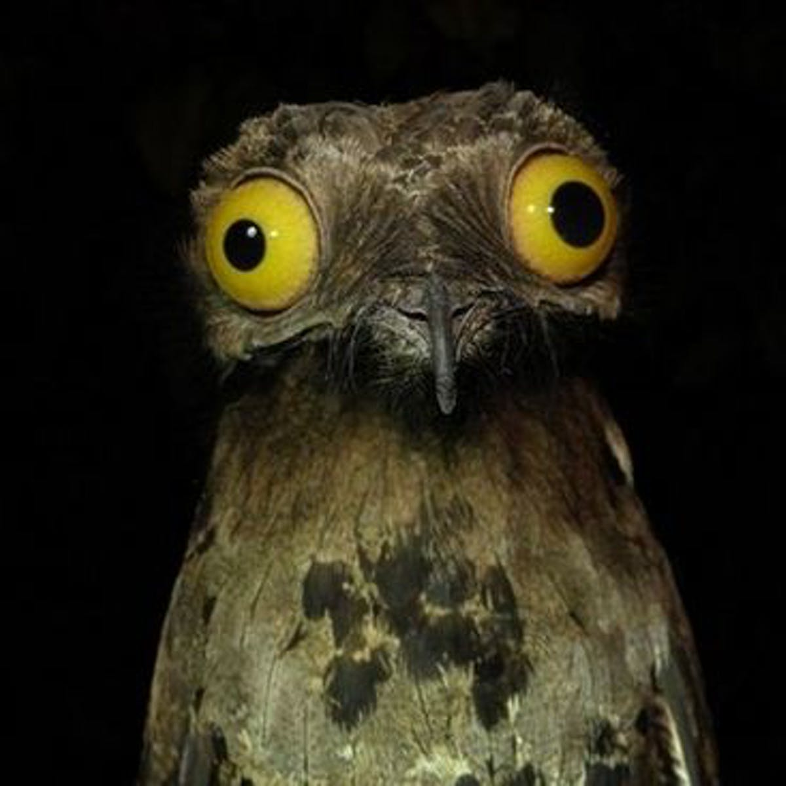
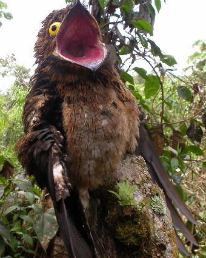
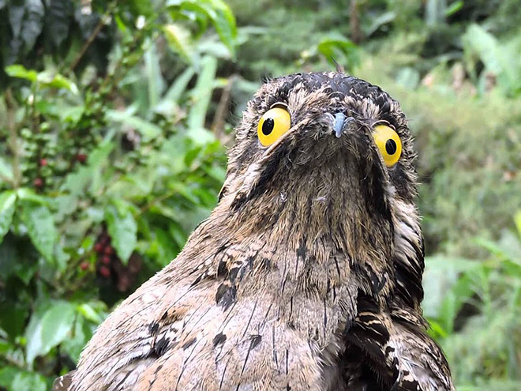

Potoos (family Nyctibiidae) are a group of near passerine birds related to the nightjars and frogmouths. They are sometimes called poor-me-ones, after their haunting calls. There are seven species in one genus, Nyctibius, in tropical Central and South America..
Find out more!Potoos range from Mexico to Argentina with several species found in the Amazon Basin.
Fossil remains of ancient potoos have been found in Germany and France.
With excellent camouflage, you'll have a hard time spotting a potoo in the wild!
